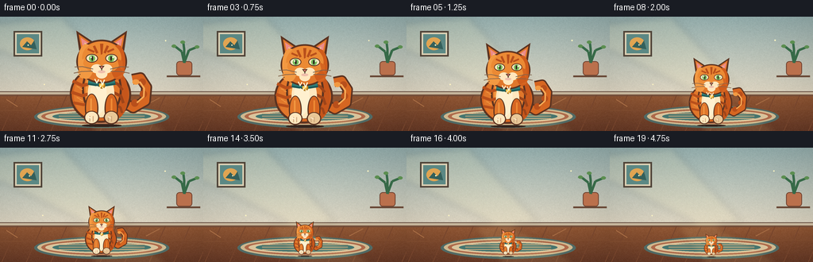
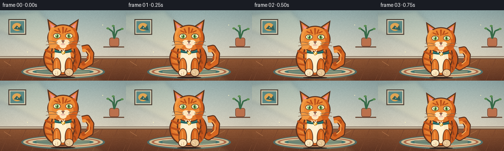
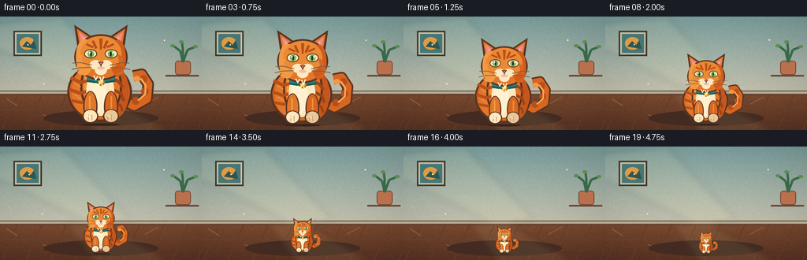
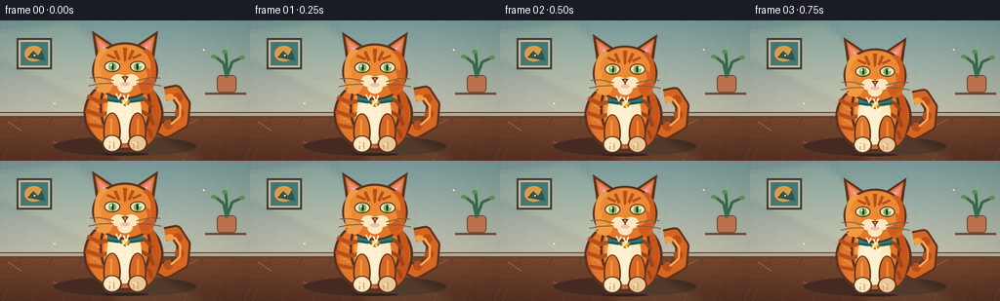

CODING AGENTS AS PIXEL WORLD MODELS
traex/DeepSeek-V4.1-Flash · instance_preservation_0049
点击播放 · 原生 RGB 像素
逐轮保存的候选
回放视频、检查图与代码变化。
每份候选均可单独播放。实际图片检查记录在下方工具轨迹中。
候选 01播放与检查图
点击播放 · 原生 RGB 像素


展开代码变化
--- 上一保存版本
+++ 本次保存版本
@@ -0,0 +1,382 @@
+from pathlib import Path
+import math
+
+import numpy as np
+from PIL import Image, ImageDraw, ImageFilter
+
+import artifact_io
+
+
+ROOT = Path(__file__).resolve().parent
+W, H, N, FPS = 256, 144, 20, 4.0
+SS = 4
+
+
+def scaled_points(points, scale=SS):
+ return [(round(x * scale), round(y * scale)) for x, y in points]
+
+
+def draw_arc(draw, box, start, end, fill, width):
+ draw.arc(tuple(round(v * SS) for v in box), start, end, fill=fill, width=width * SS)
+
+
+def draw_cat_sprite():
+ """Draw one high-resolution orange tabby on transparency."""
+ size = 260 * SS
+ image = Image.new("RGBA", (size, size), (0, 0, 0, 0))
+ draw = ImageDraw.Draw(image)
+
+ orange = (224, 119, 43, 255)
+ orange_light = (242, 153, 66, 255)
+ orange_mid = (214, 102, 33, 255)
+ orange_dark = (157, 68, 25, 255)
+ stripe = (184, 79, 27, 255)
+ outline = (91, 51, 33, 255)
+ cream = (255, 231, 190, 255)
+ cream_shadow = (233, 199, 151, 255)
+ pink = (236, 139, 137, 255)
+ teal = (45, 126, 121, 255)
+ teal_dark = (29, 89, 88, 255)
+ gold = (244, 190, 67, 255)
+ gold_dark = (180, 123, 31, 255)
+ eye_green = (117, 187, 93, 255)
+ ink = (48, 35, 30, 255)
+
+ def ellipse(box, fill, outline_color=None, width=0):
+ draw.ellipse(
+ tuple(round(v * SS) for v in box),
+ fill=fill,
+ outline=outline_color,
+ width=width * SS,
+ )
+
+ def polygon(points, fill, outline_color=None, width=0):
+ draw.polygon(
+ scaled_points(points),
+ fill=fill,
+ outline=outline_color,
+ width=width * SS,
+ )
+
+ def line(points, fill, width, joint="curve"):
+ draw.line(
+ scaled_points(points),
+ fill=fill,
+ width=round(width * SS),
+ joint=joint,
+ )
+
+ # Curled tail, outlined first so it reads clearly against the wall.
+ tail = [(171, 187), (207, 208), (237, 191), (240, 157), (225, 134), (205, 138)]
+ line(tail, outline, 27)
+ line(tail, orange_mid, 19)
+ for cx, cy, radius in [(211, 196, 9), (232, 174, 9), (229, 145, 9)]:
+ ellipse((cx - radius, cy - radius, cx + radius, cy + radius), stripe)
+ ellipse((205, 138, 222, 151), orange_light)
+
+ # Back haunch and body.
+ ellipse((52, 107, 202, 244), outline)
+ ellipse((57, 111, 197, 239), orange_mid)
+ ellipse((62, 115, 158, 235), orange)
+ ellipse((132, 116, 195, 235), (198, 86, 27, 255))
+ ellipse((82, 93, 179, 232), outline)
+ ellipse((87, 98, 174, 227), orange)
+ ellipse((91, 106, 145, 219), orange_light)
+
+ # Body stripes taper down the flank.
+ for points, width in [
+ ([(59, 142), (82, 153), (96, 150)], 8),
+ ([(56, 169), (82, 178), (101, 173)], 8),
+ ([(61, 195), (86, 200), (105, 193)], 7),
+ ]:
+ line(points, stripe, width)
+ for points, width in [
+ ([(151, 141), (170, 150), (181, 164)], 7),
+ ([(157, 169), (177, 179), (183, 196)], 7),
+ ([(160, 198), (176, 207), (180, 220)], 6),
+ ]:
+ line(points, orange_dark, width)
+
+ # Cream chest bib.
+ ellipse((96, 119, 161, 231), cream)
+ ellipse((103, 120, 142, 222), (255, 240, 207, 255))
+ polygon([(108, 119), (118, 134), (128, 119), (140, 135), (151, 119)], cream)
+
+ # Tail highlight and fur strokes.
+ line([(216, 195), (233, 180), (234, 160), (223, 144)], (247, 171, 87, 255), 4)
+ for x, y in [(72, 127), (77, 132), (69, 155), (76, 160), (69, 182), (76, 187)]:
+ line([(x, y), (x + 7, y + 3)], orange_light, 2)
+
+ # Collar sits between chest and chin.
+ line([(97, 145), (130, 150), (163, 145)], teal_dark, 13)
+ line([(98, 143), (130, 148), (162, 143)], teal, 8)
+ ellipse((123, 145, 139, 161), gold_dark)
+ ellipse((124, 145, 136, 157), gold)
+ ellipse((127, 148, 133, 154), (255, 224, 121, 255))
+
+ # Ears behind the head.
+ polygon([(75, 68), (68, 19), (116, 51)], outline)
+ polygon([(80, 63), (74, 28), (108, 51)], orange)
+ polygon([(83, 56), (79, 36), (101, 51)], pink)
+ polygon([(144, 51), (192, 19), (185, 68)], outline)
+ polygon([(152, 51), (186, 28), (180, 63)], orange)
+ polygon([(159, 51), (181, 36), (177, 56)], pink)
+ line([(88, 49), (101, 61)], cream_shadow, 3)
+ line([(172, 49), (160, 61)], cream_shadow, 3)
+
+ # Rounded head with warm side shading.
+ ellipse((68, 41, 192, 148), outline)
+ ellipse((72, 45, 188, 144), orange)
+ ellipse((72, 52, 112, 137), orange_light)
+ ellipse((151, 54, 188, 139), (207, 92, 28, 255))
+ ellipse((82, 46, 178, 126), (235, 138, 52, 255))
+
+ # Tabby forehead markings.
+ polygon([(126, 51), (134, 51), (132, 76), (128, 78)], stripe)
+ line([(111, 56), (119, 74)], stripe, 6)
+ line([(145, 56), (137, 74)], stripe, 6)
+ line([(96, 64), (112, 71)], stripe, 5)
+ line([(160, 64), (144, 71)], stripe, 5)
+
+ # Cheek fur.
+ polygon([(75, 94), (87, 87), (83, 108), (70, 121), (80, 128), (99, 137), (77, 133)], orange_light)
+ polygon([(181, 94), (168, 87), (173, 108), (188, 121), (177, 128), (158, 137), (181, 133)], orange_mid)
+
+ # Almond eyes with green irises and vertical pupils.
+ for left in (True, False):
+ if left:
+ eye_box = (91, 76, 121, 97)
+ iris_box = (99, 79, 114, 95)
+ pupil_box = (105, 81, 109, 93)
+ glint = (102, 82, 106, 86)
+ else:
+ eye_box = (139, 76, 169, 97)
+ iris_box = (146, 79, 161, 95)
+ pupil_box = (151, 81, 155, 93)
+ glint = (156, 82, 160, 86)
+ ellipse(eye_box, outline)
+ ellipse((eye_box[0] + 2, eye_box[1] + 2, eye_box[2] - 2, eye_box[3] - 2), cream)
+ ellipse(iris_box, eye_green)
+ ellipse(pupil_box, ink)
+ ellipse(glint, (250, 250, 224, 255))
+
+ # Nose, muzzle, and a small, composed smile.
+ ellipse((104, 101, 132, 123), cream)
+ ellipse((128, 101, 156, 123), cream)
+ ellipse((116, 113, 144, 136), cream)
+ polygon([(123, 105), (137, 105), (130, 114)], pink, outline, 2)
+ draw_arc(draw, (119, 108, 131, 121), 2, 70, ink, 2)
+ draw_arc(draw, (129, 108, 141, 121), 110, 178, ink, 2)
+ line([(130, 113), (130, 118)], ink, 2)
+ ellipse((121, 116, 139, 123), (239, 190, 171, 255))
+
+ # Whiskers, kept subtle at small display sizes.
+ for points in [
+ [(109, 113), (83, 107), (64, 108)],
+ [(108, 118), (81, 119), (62, 123)],
+ [(151, 113), (177, 107), (196, 108)],
+ [(152, 118), (179, 119), (198, 123)],
+ ]:
+ line(points, (112, 75, 52, 210), 2)
+
+ # Front legs and cream paws.
+ ellipse((89, 173, 122, 245), outline)
+ ellipse((92, 175, 119, 241), orange)
+ ellipse((137, 173, 170, 245), outline)
+ ellipse((140, 175, 167, 241), orange_mid)
+ line([(104, 185), (104, 215)], orange_light, 4)
+ line([(154, 185), (154, 215)], (239, 139, 53, 255), 4)
+
+ ellipse((87, 215, 124, 248), outline)
+ ellipse((90, 217, 121, 245), cream)
+ ellipse((135, 215, 172, 248), outline)
+ ellipse((138, 217, 169, 245), cream_shadow)
+ for x in (101, 109, 146, 154):
+ line([(x, 228), (x, 241)], (201, 160, 118, 255), 2)
+
+ # A few tiny chest tufts and paw highlights.
+ for points in [
+ [(113, 137), (118, 147), (123, 138)],
+ [(127, 140), (132, 151), (137, 139)],
+ [(118, 154), (123, 164), (128, 153)],
+ [(132, 157), (137, 166), (142, 155)],
+ ]:
+ line(points, (255, 242, 210, 255), 3)
+ line([(96, 229), (104, 233)], (255, 246, 220, 255), 3)
+ line([(145, 229), (153, 233)], (250, 228, 194, 255), 3)
+
+ return image
+
+
+def make_background():
+ """Render a quiet sunlit room at supersampled resolution."""
+ width, height = W * SS, H * SS
+ yy, xx = np.mgrid[0:H, 0:W]
+ wall_top = np.array([151, 177, 176], dtype=float)
+ wall_bottom = np.array([224, 215, 195], dtype=float)
+ blend = np.clip(yy / 96.0, 0.0, 1.0)[..., None]
+ wall = wall_top * (1.0 - blend) + wall_bottom * blend
+ floor_top = np.array([151, 91, 54], dtype=float)
+ floor_bottom = np.array([106, 59, 39], dtype=float)
+ floor_blend = np.clip((yy - 95.0) / 49.0, 0.0, 1.0)[..., None]
+ floor = floor_top * (1.0 - floor_blend) + floor_bottom * floor_blend
+ rgb = np.where((yy < 96)[..., None], wall, floor)
+
+ # Subtle wall texture and a soft vignette keep the flat colors alive.
+ rng = np.random.default_rng(49)
+ texture = rng.normal(0.0, 2.4, (H, W, 1))
+ rgb = np.clip(rgb + texture, 0, 255)
+ center_x = (xx - W * 0.48) / (W * 0.65)
+ center_y = (yy - H * 0.45) / (H * 0.75)
+ vignette = np.clip(1.0 - 0.12 * (center_x**2 + center_y**2), 0.82, 1.0)
+ rgb *= vignette[..., None]
+
+ background = Image.fromarray(np.uint8(rgb)).resize((width, height), Image.Resampling.BICUBIC)
+ draw = ImageDraw.Draw(background)
+
+ def rect(box, fill):
+ draw.rectangle(tuple(round(v * SS) for v in box), fill=fill)
+
+ def line(points, fill, width):
+ draw.line(scaled_points(points), fill=fill, width=round(width * SS))
+
+ # Wall/floor junction and baseboard.
+ rect((0, 94, W, 99), (102, 78, 64))
+ rect((0, 95, W, 98), (198, 182, 156))
+ rect((0, 98, W, 100), (116, 78, 57))
+
+ # Perspective floorboards.
+ for x in range(-40, 300, 31):
+ line([(x, 99), (x - 20, H)], (117, 68, 44), 1)
+ line([(0, 118), (W, 116)], (126, 75, 46), 1)
+ line([(0, 136), (W, 134)], (103, 58, 39), 1)
+ for start, end in [((8, 104), (22, 113)), ((54, 124), (73, 132)), ((184, 111), (201, 102))]:
+ line([start, end], (170, 111, 70), 1)
+
+ # Woven oval rug under the cat.
+ draw.ellipse((43 * SS, 112 * SS, 213 * SS, 140 * SS), fill=(80, 106, 101))
+ draw.ellipse((47 * SS, 114 * SS, 209 * SS, 137 * SS), fill=(205, 184, 143))
+ draw.ellipse((52 * SS, 116 * SS, 204 * SS, 135 * SS), fill=(174, 105, 73))
+ draw.ellipse((57 * SS, 118 * SS, 199 * SS, 133 * SS), fill=(218, 196, 156))
+ draw.ellipse((66 * SS, 120 * SS, 190 * SS, 131 * SS), fill=(69, 117, 111))
+ for y in (122, 125, 128):
+ line([(74, y), (182, y)], (198, 169, 128), 1)
+
+ # Sunlight falls from the upper left as a broad, soft patch.
+ light = Image.new("RGBA", (width, height), (0, 0, 0, 0))
+ light_draw = ImageDraw.Draw(light)
+ light_draw.polygon(
+ scaled_points([(0, 8), (78, 0), (167, 94), (119, 100), (0, 42)]),
+ fill=(255, 239, 184, 34),
+ )
+ light_draw.polygon(
+ scaled_points([(82, 97), (130, 96), (213, 144), (118, 144)]),
+ fill=(255, 229, 159, 26),
+ )
+ light = light.filter(ImageFilter.GaussianBlur(4 * SS))
+ background = Image.alpha_composite(background.convert("RGBA"), light)
+
+ # A small framed print adds room context without competing with the cat.
+ draw = ImageDraw.Draw(background)
+ rect((17, 18, 53, 50), (78, 66, 55))
+ rect((19, 20, 51, 48), (220, 209, 181))
+ rect((21, 22, 49, 46), (91, 136, 132))
+ draw.ellipse((25 * SS, 26 * SS, 44 * SS, 42 * SS), fill=(224, 164, 82))
+ draw.polygon(scaled_points([(28, 38), (34, 31), (39, 36), (43, 30), (46, 41)]), fill=(52, 96, 91))
+
+ # A slim shelf line and ceramic pot at the far right.
+ rect((210, 74, 252, 76), (105, 73, 55))
+ draw.rounded_rectangle(
+ (222 * SS, 56 * SS, 242 * SS, 74 * SS),
+ radius=4 * SS,
+ fill=(186, 112, 76),
+ outline=(112, 66, 48),
+ width=1 * SS,
+ )
+ for points in [
+ [(232, 58), (229, 44), (220, 37)],
+ [(232, 58), (238, 42), (248, 38)],
+ [(232, 57), (232, 41), (231, 33)],
+ ]:
+ line(points, (55, 106, 72), 3)
+ for x, y in [(219, 37), (230, 32), (248, 38)]:
+ draw.ellipse(((x - 3) * SS, (y - 2) * SS, (x + 3) * SS, (y + 2) * SS), fill=(91, 142, 80))
+
+ return background
+
+
+def render_frames():
+ background = make_background()
+ cat = draw_cat_sprite()
+ frames = []
+
+ # Cat local drawing is 260 px high, with its paws around local y=247.
+ sprite_anchor_x = 130
+ sprite_anchor_y = 247
+ sprite_cat_height = 227.0
+
+ for index in range(N):
+ t = index / (N - 1)
+ eased = 0.5 - 0.5 * math.cos(math.pi * t)
+ cat_height = 117.0 - 90.0 * eased
+ scale = cat_height / sprite_cat_height
+ bob = (1.1 - 0.5 * eased) * math.sin(2.0 * math.pi * t * 1.15)
+ floor_y = 135.0 + bob
+
+ sprite_w = round(260 * scale * SS)
+ sprite_h = round(260 * scale * SS)
+ cat_scaled = cat.resize((sprite_w, sprite_h), Image.Resampling.LANCZOS)
+
+ canvas = background.copy().convert("RGBA")
+ draw = ImageDraw.Draw(canvas, "RGBA")
+
+ # Shadow scales with the cat, preserving the impression of one object.
+ shadow_w = 49.0 * scale
+ shadow_h = 7.0 * scale
+ shadow_box = (
+ round((128 - shadow_w) * SS),
+ round((floor_y - shadow_h * 0.5 + 2.0) * SS),
+ round((128 + shadow_w) * SS),
+ round((floor_y + shadow_h * 0.5 + 2.0) * SS),
+ )
+ draw.ellipse(shadow_box, fill=(50, 35, 29, 82))
+
+ paste_x = round((128.0 - sprite_anchor_x * scale) * SS)
+ paste_y = round((floor_y - sprite_anchor_y * scale) * SS)
+ canvas.alpha_composite(cat_scaled, (paste_x, paste_y))
+
+ # Tiny floating dust catches the sunlight; motion stays subordinate to the cat.
+ dust_alpha = 32 + round(14 * (1.0 - t))
+ for phase, base_x, base_y, amp in [
+ (0.2, 35, 35, 2.0),
+ (1.4, 207, 30, 1.5),
+ (2.7, 55, 86, 1.8),
+ ]:
+ x = base_x + amp * math.sin(phase + t * 2.0)
+ y = base_y + 0.8 * math.cos(phase + t * 1.4)
+ draw.ellipse(
+ (
+ round((x - 0.8) * SS),
+ round((y - 0.8) * SS),
+ round((x + 0.8) * SS),
+ round((y + 0.8) * SS),
+ ),
+ fill=(255, 244, 193, dust_alpha),
+ )
+
+ frame = canvas.convert("RGB").resize((W, H), Image.Resampling.LANCZOS)
+ frames.append(np.asarray(frame, dtype=np.uint8))
+
+ return np.stack(frames)
+
+
+def main():
+ frames = render_frames()
+ assert frames.shape == (N, H, W, 3), frames.shape
+ assert frames.dtype == np.uint8, frames.dtype
+ artifact_io.save(frames, ROOT)
+ print(f"saved {N} RGB frames at {W}x{H}, {FPS:g} fps")
+
+
+if __name__ == "__main__":
+ main()
候选 02播放与检查图
点击播放 · 原生 RGB 像素


展开代码变化
--- 上一保存版本
+++ 本次保存版本
@@ -212,12 +212,12 @@
"""Render a quiet sunlit room at supersampled resolution."""
width, height = W * SS, H * SS
yy, xx = np.mgrid[0:H, 0:W]
- wall_top = np.array([151, 177, 176], dtype=float)
- wall_bottom = np.array([224, 215, 195], dtype=float)
+ wall_top = np.array([123, 159, 158], dtype=float)
+ wall_bottom = np.array([197, 194, 174], dtype=float)
blend = np.clip(yy / 96.0, 0.0, 1.0)[..., None]
wall = wall_top * (1.0 - blend) + wall_bottom * blend
- floor_top = np.array([151, 91, 54], dtype=float)
- floor_bottom = np.array([106, 59, 39], dtype=float)
+ floor_top = np.array([124, 76, 48], dtype=float)
+ floor_bottom = np.array([91, 52, 36], dtype=float)
floor_blend = np.clip((yy - 95.0) / 49.0, 0.0, 1.0)[..., None]
floor = floor_top * (1.0 - floor_blend) + floor_bottom * floor_blend
rgb = np.where((yy < 96)[..., None], wall, floor)
@@ -241,48 +241,42 @@
draw.line(scaled_points(points), fill=fill, width=round(width * SS))
# Wall/floor junction and baseboard.
- rect((0, 94, W, 99), (102, 78, 64))
- rect((0, 95, W, 98), (198, 182, 156))
- rect((0, 98, W, 100), (116, 78, 57))
+ rect((0, 94, W, 99), (82, 66, 55))
+ rect((0, 95, W, 98), (183, 171, 146))
+ rect((0, 98, W, 100), (101, 65, 48))
# Perspective floorboards.
for x in range(-40, 300, 31):
- line([(x, 99), (x - 20, H)], (117, 68, 44), 1)
- line([(0, 118), (W, 116)], (126, 75, 46), 1)
- line([(0, 136), (W, 134)], (103, 58, 39), 1)
+ line([(x, 99), (x - 20, H)], (99, 58, 39), 1)
+ line([(0, 118), (W, 116)], (107, 65, 42), 1)
+ line([(0, 136), (W, 134)], (85, 48, 33), 1)
for start, end in [((8, 104), (22, 113)), ((54, 124), (73, 132)), ((184, 111), (201, 102))]:
- line([start, end], (170, 111, 70), 1)
-
- # Woven oval rug under the cat.
- draw.ellipse((43 * SS, 112 * SS, 213 * SS, 140 * SS), fill=(80, 106, 101))
- draw.ellipse((47 * SS, 114 * SS, 209 * SS, 137 * SS), fill=(205, 184, 143))
- draw.ellipse((52 * SS, 116 * SS, 204 * SS, 135 * SS), fill=(174, 105, 73))
- draw.ellipse((57 * SS, 118 * SS, 199 * SS, 133 * SS), fill=(218, 196, 156))
- draw.ellipse((66 * SS, 120 * SS, 190 * SS, 131 * SS), fill=(69, 117, 111))
- for y in (122, 125, 128):
- line([(74, y), (182, y)], (198, 169, 128), 1)
+ line([start, end], (148, 96, 59), 1)
+
+ # A dark, narrow shadow pool behind the subject keeps the silhouette crisp.
+ draw.ellipse((55 * SS, 119 * SS, 201 * SS, 139 * SS), fill=(67, 43, 33))
# Sunlight falls from the upper left as a broad, soft patch.
light = Image.new("RGBA", (width, height), (0, 0, 0, 0))
light_draw = ImageDraw.Draw(light)
light_draw.polygon(
scaled_points([(0, 8), (78, 0), (167, 94), (119, 100), (0, 42)]),
- fill=(255, 239, 184, 34),
+ fill=(255, 239, 184, 26),
)
light_draw.polygon(
scaled_points([(82, 97), (130, 96), (213, 144), (118, 144)]),
- fill=(255, 229, 159, 26),
+ fill=(255, 229, 159, 20),
)
light = light.filter(ImageFilter.GaussianBlur(4 * SS))
background = Image.alpha_composite(background.convert("RGBA"), light)
# A small framed print adds room context without competing with the cat.
draw = ImageDraw.Draw(background)
- rect((17, 18, 53, 50), (78, 66, 55))
- rect((19, 20, 51, 48), (220, 209, 181))
- rect((21, 22, 49, 46), (91, 136, 132))
- draw.ellipse((25 * SS, 26 * SS, 44 * SS, 42 * SS), fill=(224, 164, 82))
- draw.polygon(scaled_points([(28, 38), (34, 31), (39, 36), (43, 30), (46, 41)]), fill=(52, 96, 91))
+ rect((17, 18, 53, 50), (63, 57, 49))
+ rect((19, 20, 51, 48), (199, 191, 164))
+ rect((21, 22, 49, 46), (70, 119, 117))
+ draw.ellipse((25 * SS, 26 * SS, 44 * SS, 42 * SS), fill=(220, 155, 72))
+ draw.polygon(scaled_points([(28, 38), (34, 31), (39, 36), (43, 30), (46, 41)]), fill=(44, 86, 83))
# A slim shelf line and ceramic pot at the far right.
rect((210, 74, 252, 76), (105, 73, 55))
@@ -318,7 +312,7 @@
for index in range(N):
t = index / (N - 1)
eased = 0.5 - 0.5 * math.cos(math.pi * t)
- cat_height = 117.0 - 90.0 * eased
+ cat_height = 124.0 - 96.0 * eased
scale = cat_height / sprite_cat_height
bob = (1.1 - 0.5 * eased) * math.sin(2.0 * math.pi * t * 1.15)
floor_y = 135.0 + bob
@@ -331,8 +325,8 @@
draw = ImageDraw.Draw(canvas, "RGBA")
# Shadow scales with the cat, preserving the impression of one object.
- shadow_w = 49.0 * scale
- shadow_h = 7.0 * scale
+ shadow_w = 44.0 * scale
+ shadow_h = 5.2 * scale
shadow_box = (
round((128 - shadow_w) * SS),
round((floor_y - shadow_h * 0.5 + 2.0) * SS),
候选 03播放与检查图
点击播放 · 原生 RGB 像素

展开代码变化
--- 上一保存版本
+++ 本次保存版本
@@ -335,6 +335,7 @@
)
draw.ellipse(shadow_box, fill=(50, 35, 29, 82))
+ # The sprite is already supersampled, so paste in its own pixel space.
paste_x = round((128.0 - sprite_anchor_x * scale) * SS)
paste_y = round((floor_y - sprite_anchor_y * scale) * SS)
canvas.alpha_composite(cat_scaled, (paste_x, paste_y))
可观测工具轨迹
实际执行的命令与返回图片。
命令 1exit 0
/bin/bash -lc "pwd && rg --files -g '"'!*.mp4'"' -g '"'!*.mov'"' -g '"'!*.webm'"' | sed -n '1,120p'"
命令 2exit 0
/bin/bash -lc "sed -n '1,240p' prompt.txt"
命令 3exit 0
/bin/bash -lc "sed -n '1,260p' GENERATION_RULES.md"
命令 4exit 0
/bin/bash -lc 'cat task_spec.json'
命令 5exit 0
/bin/bash -lc "sed -n '1,280p' artifact_io.py"
命令 6exit 0
/bin/bash -lc "sed -n '1,260p' player_template.html"
命令 7exit 0
/bin/bash -lc "find . -maxdepth 2 -type f -printf '%p %s bytes\\n' | sort"
命令 8exit 0
/bin/bash -lc 'python generate.py'
命令 9exit 127
/bin/bash -lc 'identify frames/*.png inspection.png transition_check.png'
命令 10exit 0
/bin/bash -lc 'command -v chafa || command -v viu || command -v jp2 || command -v img2txt || true'
命令 11exit 0
/bin/bash -lc 'du -h frames/*.png pixels.npz index.html | tail -n 6'
命令 12exit 0
/bin/bash -lc "python - <<'PY'
from PIL import Image
import numpy as np
for i in [0,4,9,14,19]:
a=np.array(Image.open(f'frames/{i:02d}.png'))
# orange-ish cat pixels and bright pixels
orange=(a[:,:,0]>140)&(a[:,:,0]>a[:,:,1]*1.25)&(a[:,:,1]>40)&(a[:,:,2]<120)
ys,xs=np.where(orange)
print(i, 'orange bbox', (xs.min(),ys.min(),xs.max(),ys.max()) if len(xs) else None, 'n', len(xs), 'mean', a.mean(axis=(0,1)).round(1))
print('unique frames', len({Image.open(f'frames/{i:02d}.png').tobytes() for i in range(20)}))
PY"命令 13exit 0
/bin/bash -lc "python - <<'PY'
import generate
im=generate.draw_cat_sprite()
a=im.resize((65,65), __import__('PIL').Image.Resampling.LANCZOS)
p=a.load()
for y in range(65):
row=''
for x in range(65):
r,g,b,al=p[x,y]
if al<40: c=' '
elif b>120 and g>100: c='E'
elif r>220 and g>190 and b>140: c='c'
elif r>210 and g<170: c='O'
elif r>150 and g<120: c='o'
elif r<110: c='#'
else: c='.'
row+=c
print(row.rstrip())
PY"命令 14exit 0
/bin/bash -lc 'python generate.py'
命令 15exit 0
/bin/bash -lc "python - <<'PY'
from pathlib import Path
from PIL import Image
import numpy as np
import generate
im=generate.draw_cat_sprite()
alpha=np.array(im)[:,:,3]
for i in [0,4,9,14,19]:
t=i/19
import math
e=.5-.5*math.cos(math.pi*t)
h=124-96*e
s=h/227
bob=(1.1-.5*e)*math.sin(2*math.pi*t*1.15)
floor=135+bob
# silhouette bbox in final coordinates
ys,xs=np.where(alpha>32)
x0=128-130*s+xs.min()*s; x1=128-130*s+xs.max()*s
y0=floor-247*s+ys.min()*s; y1=floor-247*s+ys.max()*s
a=np.array(Image.open(f'frames/{i:02d}.png'))
print(f'{i:02d} scale={s:.3f} bbox=({x0:.1f},{y0:.1f})-({x1:.1f},{y1:.1f}) {x1-x0:.1f}x{y1-y0:.1f}px mean={a.mean():.1f}')
PY"命令 16exit 0
/bin/bash -lc "python generate.py && python - <<'PY'
from PIL import Image
import numpy as np, math, generate
im=generate.draw_cat_sprite(); alpha=np.array(im)[:,:,3]
for i in [0,4,9,14,19]:
t=i/19; e=.5-.5*math.cos(math.pi*t); h=124-96*e; s=h/227
bob=(1.1-.5*e)*math.sin(2*math.pi*t*1.15); floor=135+bob
ys,xs=np.where(alpha>32)
x0=128-130*s+xs.min()*s; x1=128-130*s+xs.max()*s
y0=floor-247*s+ys.min()*s; y1=floor-247*s+ys.max()*s
print(f'{i:02d} scale={s:.3f} bbox=({x0:.1f},{y0:.1f})-({x1:.1f},{y1:.1f}) {x1-x0:.1f}x{y1-y0:.1f}px')
PY"命令 17exit 0
/bin/bash -lc 'rg -n "paste_|alpha_composite|cat_scaled|sprite_anchor" generate.py'
命令 18exit 0
/bin/bash -lc "python - <<'PY'
from PIL import Image
import numpy as np
for i in [0,4,9,14,19]:
a=np.array(Image.open(f'frames/{i:02d}.png')).astype(int)
m=(a[:,:,0]>125)&(a[:,:,0]>a[:,:,1]*1.22)&(a[:,:,1]>35)&(a[:,:,2]<135)
m[:,:65]=False;m[:,210:]=False;m[:25]=False
ys,xs=np.where(m)
print(i,(xs.min(),ys.min(),xs.max(),ys.max()),'count',len(xs))
PY"命令 19exit 0
/bin/bash -lc "python - <<'PY'
import json, re, base64
from pathlib import Path
import numpy as np
from PIL import Image
html=Path('index.html').read_text()
m=re.search(r'const DATA=(\\{.*?\\}),W=',html)
assert m, 'missing DATA'
data=json.loads(m.group(1))
def unpack(s):
b=base64.b64decode(s)
return np.frombuffer(b,dtype='<u4').reshape(144,256)
frames=[unpack(data['first'])]
for delta in data['deltas']:
f=frames[-1].copy(); p=np.frombuffer(base64.b64decode(delta),dtype='<u4')
i=0
while i < len(p):
start,count=int(p[i]),int(p[i+1]); i+=2
f.reshape(-1)[start:start+count]=p[i:i+count]; i+=count
frames.append(f)
assert len(frames)==20
for i,f in enumerate(frames):
rgb=np.stack([(f>>16)&255,(f>>8)&255,f&255],axis=-1).astype(np.uint8)
expected=np.array(Image.open(f'frames/{i:02d}.png'))
assert np.array_equal(rgb,expected), i
print('decoded 20/20 frames exactly match PNGs')
print('payload bytes', len(data['first'])+sum(len(x) for x in data['deltas']))
print('frame dimensions', frames[0].shape, 'fps', data['fps'], 'audio', data['audio'])
PY"保存候选 3 份；完成命令 19 次；可验证图片返回 0 张。原始 API 响应与完整日志保留在本地。